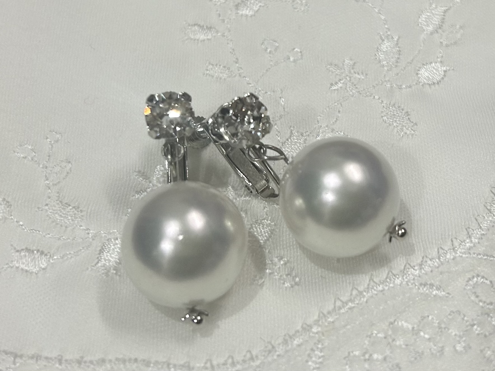
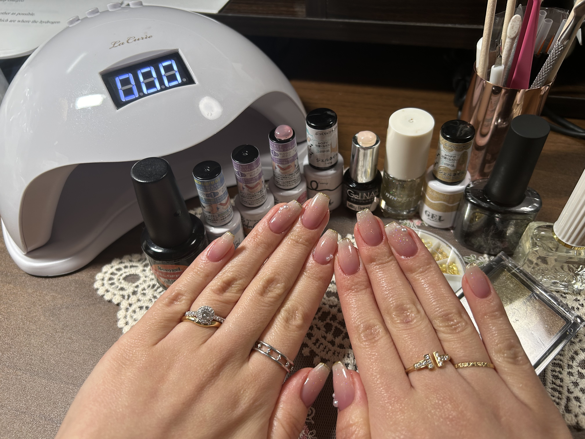
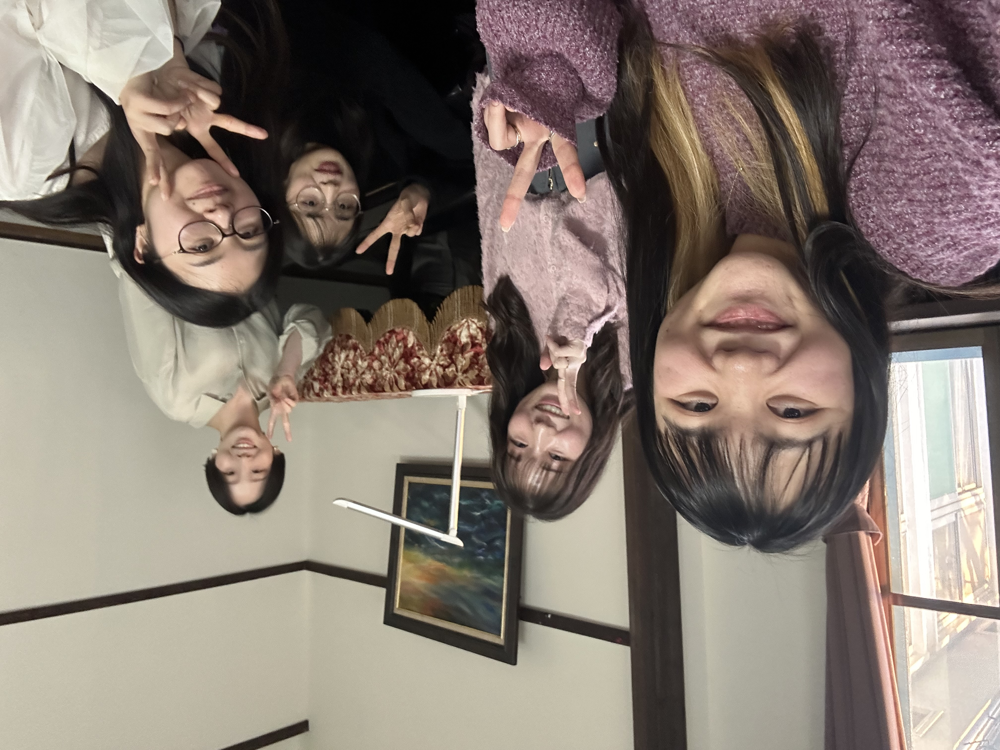

Hiroshi & Sahya's Wedding
2026.03.07
Album
当日の思い出を
こちらにアップロードしてください
基本的には"みんなにシェア"の設定を
お願いします
※設定しない場合は
所属グループのみにシェアされます
Timeline
桜木町駅への直行シャトルバスは
エントランスより
19:10, 19:30, 19:50...
に運行しております
Escort Card
当日の席はこちら
席次表を開くQ & A
新郎新婦へのメッセージやご質問は
こちらまで
sampei.isogai@gmail.com への
メールにもお問い合わせいただけます!
Bridal Items
Webデザイン・ペーパーアイテム
メインカラーを統一して自作しました！
テーブルコーディネートとの
相性にもご注目ください♪
パールイヤリング
この日のために、
新婦母が手作りした贈り物です！

ブライダルネイル
結婚式に合わせた純白と、
好みのピンクのグラデーションに、
ラメとパールをあしらいました。
新婦渾身のセルフネイルです！

このホームページ
新郎がプログラムを0から書きました。
PCにも対応しております。
聖歌
この日のために
普連土学園の坂の上の
フレンズセンターで練習しました。
皆様への感謝を込めて…

♪ simple gifts
【歌詞】
Tis the gift to be simple，
'tis the gift to be free，
'Tis the gift to come down
where we ought to be，
And when we find ourselves
in the place just right，
'Twill be in the valley
of love and delight.
When true simplicity is gain'd，
To bow and to bend
we shan't be asham'd，
To turn，turn will be our delight，
Till by turning，
turning we come round right.
【意訳】
素のままでいることは
神様からの贈り物
自由であることは
神様からの贈り物
在るべき場所に在ることも
神様からの贈り物
在るべき場所に自分を見いだすとき
そこは愛と喜びの谷間となる
素の自分を受け入れたとき
頭を下げ 腰を低くすることを
恥じることはなくなる
巡り 変わり続けることが
私たちの喜びとなり
やがて正しいところにたどり着くのだ
♪ 感謝します
【歌詞】
感謝します
試みにあわせ
鍛えたもう主の導きを
感謝します
苦しみの中に
育てたもう 主の御心を
しかし願う道が閉ざされた時は
目の前が暗くなりました
どんな時でもあなたの約束を
忘れない者としてください
感謝します
悲しみの時に
ともに泣きたもう主の愛を
感謝します
こぼれる涙を
拭いたもう主の哀れみを
そして願う道が開かれた時は
御恵に熱くなりました
どんな時でもあなたの約束を
忘れない者としてください
感謝します
試みに耐える
力をくださる御恵を
感謝します
全てのことを
最善と成したもう御心を